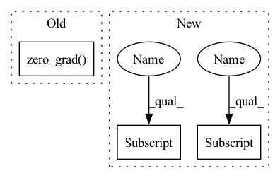

Pattern ID :9065
Before Change
a_dist.log_prob(a_dist.sample()).sum(-1, keepdim=True).clamp(-100.0, 100.0)
)
alpha_loss = -(log_alpha * (logp_a + target_entropy).detach()).mean()
optimizer.zero_grad()
alpha_loss.backward()
optimizer.step()
logs["losses/alpha_loss"] = alpha_loss.item()
logs["alpha"] = log_alpha.exp().item()After Change
.sum(-1, keepdim=True)
.clamp(-100.0, 100.0)
)
alpha_loss = -(log_alphas[i] * (logp_a + target_entropy).detach()).mean()
optimizers[i].zero_grad()
alpha_loss.backward()
optimizers[i].step()
logs[f"losses/alpha_loss_{i}"] = alpha_loss.item()
logs[f"alphas/alpha_{i}"] = log_alphas[i] .exp().item()
return logs
In pattern: SUPERPATTERN
Frequency: 4
Non-data size: 3
Instances Fragment ID: 32955734
Project Name: jakegrigsby/super_sac
Commit Name: 819313070dbb7c72886cafb948c401c78eb03861
Time: 2021-10-12
Author: jcg6dn@virginia.edu
File Name: uafbc/learning.py
M Class Name: AnonimousClass
N Class Name: AnonimousClass
M Method Name: alpha_update(9)
N Method Name: alpha_update(9)
M Parent Class:
N Parent Class:
M File Name: uafbc/learning.py
N File Name: uafbc/learning.py
M Start Line: 185
M End Line: 198
N Start Line: 191
N End Line: 211
Before Change
for i in range(self.current_batch * self.batch_size, batches, self.batch_size):
y_pred = self.model(x[i : i + self.batch_size])
loss = self.criterion(y_pred, y[i : i + self.batch_size])
self.optimizer.zero_grad()
loss.backward()
self.optimizer.step()
self.n_updates += 1
After Change
if self.local_epochs > 0:
for _ in range(self.local_epochs):
for i in range(0, x.size(0), batch_size):
self._local_step(x[i : i + batch_size], y[i : i + batch_size] )
else:
perm = torch.randperm(x.size(0))
self._local_step(x[perm][:batch_size], y[perm] [:batch_size])
def _local_step(self, x:torch.Tensor, y:torch.Tensor) -> None:
self.model.train() Fragment ID: 32955735
Project Name: makgyver/gossipy
Commit Name: 7601b023e9ecd0604a37cf18afd67e14a2044939
Time: 2022-04-29
Author: mak1788@gmail.com
File Name: gossipy/model/handler.py
M Class Name: TorchModelHandler
N Class Name: TorchModelHandler
M Method Name: _update(2)
N Method Name: _update(2)
M Parent Class: ModelHandler
N Parent Class: ModelHandler
M File Name: gossipy/model/handler.py
N File Name: gossipy/model/handler.py
M Start Line: 136
M End Line: 153
N Start Line: 136
N End Line: 145
Before Change
a_dist.log_prob(a_dist.sample()).sum(-1, keepdim=True).clamp(-100.0, 100.0)
)
alpha_loss = -(log_alpha * (logp_a + target_entropy).detach()).mean()
optimizer.zero_grad()
alpha_loss.backward()
optimizer.step()
logs["losses/alpha_loss"] = alpha_loss.item()
logs["alpha"] = log_alpha.exp().item()After Change
.sum(-1, keepdim=True)
.clamp(-100.0, 100.0)
)
alpha_loss = -(log_alphas[i] * (logp_a + target_entropy).detach()).mean()
optimizers[i].zero_grad()
alpha_loss.backward()
optimizers[i].step()
logs[f"losses/alpha_loss_{i}"] = alpha_loss.item()
logs[f"alphas/alpha_{i}"] = log_alphas[i] .exp().item()
return logs
Fragment ID: 32955719
Project Name: jakegrigsby/super_sac
Commit Name: 819313070dbb7c72886cafb948c401c78eb03861
Time: 2021-10-12
Author: jcg6dn@virginia.edu
File Name: uafbc/learning.py
M Class Name: AnonimousClass
N Class Name: AnonimousClass
M Method Name: alpha_update(9)
N Method Name: alpha_update(9)
M Parent Class:
N Parent Class:
M File Name: uafbc/learning.py
N File Name: uafbc/learning.py
M Start Line: 185
M End Line: 198
N Start Line: 191
N End Line: 211
Before Change
// prepare lstm to receive gradient from all losses (Q1_loss, Q2_loss, policy_loss)
// retain_graph needs to be used because lstm is shared among the three
self.lstm_optimizer.zero_grad()
// reduce td error
self.Q1_optimizer.zero_grad()After Change
self.critic_lstm.flatten_parameters()
critic_h, _ = self.actor_lstm(b.o)
critic_h_1_T, critic_h_2_Tplus1 = critic_h[:, :-1, :] , critic_h[:, 1:, :] // T represents num_bptt
// prepare lstm to receive gradient from all losses (Q1_loss, Q2_loss, policy_loss)
// retain_graph needs to be used because lstm is shared among the three Fragment ID: 32955715
Project Name: zhihanyang2022/off-policy-continuous-control
Commit Name: 0d405a315e44a0b8df2bfcb89ea02b6979215166
Time: 2021-05-23
Author: yangz2@carleton.edu
File Name: offpcc/algorithms/sac_lstm.py
M Class Name: SAC_LSTM
N Class Name: SAC_LSTM
M Method Name: update_networks(2)
N Method Name: update_networks(2)
M Parent Class: OffPolicyRLAlgorithm
N Parent Class: OffPolicyRLAlgorithm
M File Name: offpcc/algorithms/sac_lstm.py
N File Name: offpcc/algorithms/sac_lstm.py
M Start Line: 128
M End Line: 221
N Start Line: 130
N End Line: 229
Before Change
// Update the policy by maximising the clipped PPO objective
policy_ratio = (trajectories["log_prob_actions"] - trajectories["old_log_prob_actions"]).exp()
policy_loss = -torch.min(policy_ratio * trajectories["advantages"], torch.clamp(policy_ratio, min=1 - ppo_clip, max=1 + ppo_clip) * trajectories["advantages"]).mean()
actor_optimiser.zero_grad()
policy_loss.backward()
actor_optimiser.step()
After Change
// Recalculate outputs for subsequent iterations
if epoch > 0:
policy, trajectories["values"] = agent(trajectories["states"])
trajectories["log_prob_actions"], trajectories["entropies"] = policy.log_prob(trajectories["actions"].detach()), policy.entropy()
// Update the policy by maximising the clipped PPO objective
policy_ratio = (trajectories["log_prob_actions"] - trajectories["old_log_prob_actions"]).exp()
policy_loss = -torch.min(policy_ratio * trajectories["advantages"], torch.clamp(policy_ratio, min=1 - ppo_clip, max=1 + ppo_clip) * trajectories["advantages"]).mean()
// Fit value function by regression on mean squared error
value_loss = F.mse_loss(trajectories["values"], trajectories["rewards_to_go"])
// Add entropy regularisation
entropy_loss = -trajectories["entropies"] .mean()
agent_optimiser.zero_grad()
(policy_loss + value_loss_coeff * value_loss + entropy_loss_coeff * entropy_loss).backward()
Fragment ID: 32955713
Project Name: kaixhin/imitation-learning
Commit Name: fd3ee1838359dcc6da9836b6249396e595ff90db
Time: 2020-04-16
Author: design@kaixhin.com
File Name: training.py
M Class Name: AnonimousClass
N Class Name: AnonimousClass
M Method Name: ppo_update(7)
N Method Name: ppo_update(6)
M Parent Class:
N Parent Class:
M File Name: training.py
N File Name: training.py
M Start Line: 33
M End Line: 50
N Start Line: 34
N End Line: 51